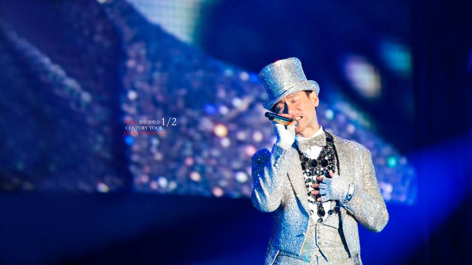
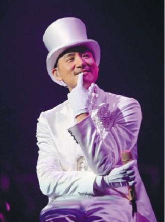

<!-- 隐藏此文本域 --> [00:00.64]一路上有你 - 张学友 [00:03.70]曲：Jacky [00:04.14]编曲：Jacky [00:10.60]你知道吗 [00:12.37]爱你并不容易 [00:15.80]还需要很多勇气 [00:20.90]是天意吧 [00:23.00]好多话说不出去 [00:26.54]就是怕你负担不起 [00:31.39]你相信吗 [00:33.15]这一生遇见你 [00:36.57]是上辈子我欠你的 [00:41.43]是天意吧 [00:43.79]让我爱上你 [00:47.29]才又让你 离我而去 [00:53.31]也许轮回里 早已注定 [00:57.65]今生就该我还给你 [01:03.63]一颗心在风雨里 [01:06.49]飘来飘去 [01:08.54]都是为你 [01:15.09]一路上有你 [01:17.65]苦一点也愿意 [01:20.23]就算是为了分离与我相遇 [01:25.49]一路上有你 [01:28.12]痛一点也愿意 [01:30.71]就算这辈子注定要和你分离 [01:44.50]你知道吗 [01:46.29]爱你并不容易 [01:49.59]还需要很多勇气 [01:54.77]是天意吧 [01:56.87]好多话说不出去 [02:00.30]就是怕你负担不起 [02:05.36]你相信吗 [02:07.11]这一生遇见你 [02:10.37]是上辈子我欠你的 [02:15.63]是天意吧 [02:17.64]让我爱上你 [02:21.09]才又让你离我而去 [02:26.81]也许轮回里 早已注定 [02:31.31]今生就该我还给你 [02:37.46]一颗心在风雨里 [02:40.43]飘来飘去 [02:42.75]都是为你 [02:49.23]一路上有你 [02:51.48]苦一点也愿意 [02:54.14]就算是为了分离与我相遇 [02:59.05]一路上有你 [03:01.87]痛一点也愿意 [03:04.50]就算这辈子注定要和你分离 [03:38.48]一路上有你 [03:40.95]苦一点也愿意 [03:43.58]就算是为了分离与我相遇 [03:48.92]一路上有你 [03:51.39]痛一点也愿意 [03:53.98]就算这辈子注定要和你分离 [03:59.35]一路上有你 [04:01.83]苦一点也愿意 [04:04.30]就算是为了分离与我相遇 [04:09.75]一路上有你 [04:12.23]痛一点也愿意 [04:14.71]就算只能在梦里拥抱你 [04:23.09]
<!-- 隐藏此文本域 --> [00:01.64]遥远的她 - 张学友 [00:05.00] 作曲 : 谷村新司 [00:07.00] 作词 : 吕承明 [00:10.00] [00:25.900]让晚风轻轻吹送了落霞 [00:30.899]我已习惯每个傍晚去想她 [00:36.897]在远方的她 此刻可知道 [00:42.897]这段情在我心 始终记挂 [00:49.897]在这半山 那天我知我知快将要别离没说话 [00:55.897]望向她 却听到她说不要相约 [00:59.897]纵使分隔 相爱不会害怕 [01:01.897]遥遥万里 心声有否偏差 [01:07.898]正是让这爱试出真与假 [01:13.898]遥远的她 仿佛借风声跟我话 [01:20.898]热情若没变 那管它沧桑变化 [01:28.898] [01:39.898]但这天收到 她爸爸的一封信 [01:45.898]信里面说 血癌已带走她 [01:51.898]但觉得空虚 的心仿佛已僵化 [01:57.898]过去事象炮弹 心中爆炸 [02:03.898]在这半山 这天我悲痛悲痛不已在胡乱说话 [02:10.900]夜雨中 似听到她说不要相约 [02:13.900]纵使分隔 相爱不会害怕 [02:16.900]人无觅处 心声有否偏差 [02:23.900]正是让这爱试出真与假 [02:29.900]遥远的她 仿佛借风声跟我话 [02:35.900]热情若没变 那管它沧桑变化 [02:43.900] [03:06.900]遥远的她 不可以再归家 [03:13.900]我在梦里却始终只有她 [03:18.900]遥远的她 可知我心中的说话 [03:25.900]热情并没变 那管它沧桑变化 [03:31.900]遥远的她 不可以再归家 [03:37.900]我在梦里却始终只有她 [03:43.900]遥远的她 可知我心中的说话 [03:50.900]热情并没变 那管它沧桑变化
一路上有你
张学友

